一点文章
世代甜品RTX 3060Ti 评测｜“等等党”高光时刻来了！
RTX 3090、RTX 3080、RTX 3070的陆续发布，让玩家体验到了NVIDIA全新RTX 30系列显卡的强悍性能，真香感叹不绝于耳。而现在，真香家族再次壮大，只因为RTX 3060 Ti的到来。
以“Metal is Master”为口号的影驰金属大师系列，凭借硬朗的金属装甲风和较高的性能俘获了众多“直男”玩家。所以本次评测也将以影驰 GeForce RTX 3060 Ti金属大师 OC为基础，由外到内，为你一探RTX 3060 Ti的“本质”。
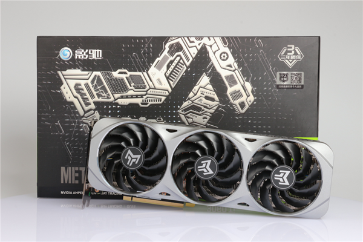
影驰 GeForce RTX 3060 Ti 金属大师 OC外包装依旧采用黑白银三色为主色，凸显出金属大师系列独有logo，刚硬的金属大师霸气出场。 与其它影驰 RTX 30系列显卡一样， RTX 3060 Ti 金属大师 OC的外包装盒右上角贴有三年质保和个人送保的标识，这意味着全新RTX 30系列新品均支持这两项售后服务。
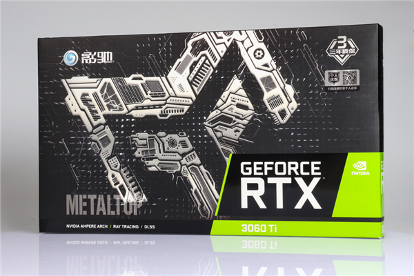 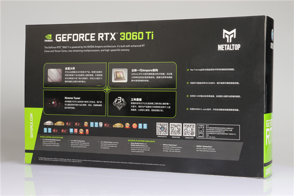
外包装盒背面介绍了全新一代RTX 30系金属大师系列显卡的出彩之处，包括真硬核的金属外壳、帧强悍的核心架构、全新多功能影驰魔盘和全面周到的三年质保服务。
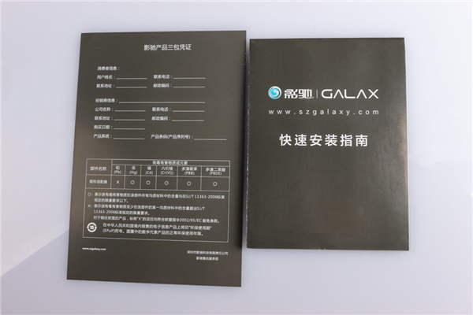
打开显卡包装盒，首先看到的是一份影驰产品三包凭证、快速安装指南手册。
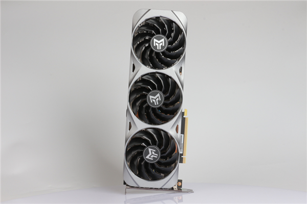 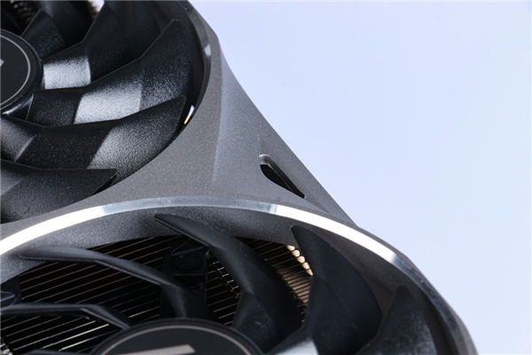
全金属压铸的一体式上盖包裹住金属大师本体，银白色金属光泽和细腻的磨砂金属质感十分浓厚，加上局部三角凹陷出的镂空开孔，和大风扇口上的金属高难度切割边，一起折射出耀眼银光，即便没有多彩的RGB灯光，金属大师出场依旧是自带光芒，银光逼人。
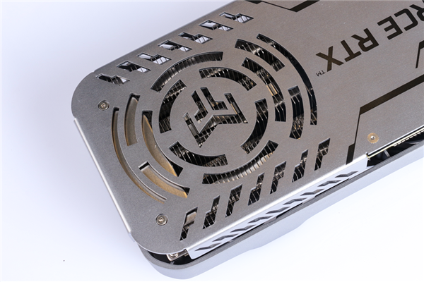 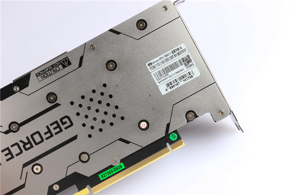
全尺寸金属背板，采用了不规则线条点缀和镂空开孔设计，提高观赏性的同时，还能有效保护PCB不受显卡重力导致弯曲并提高散热性能。
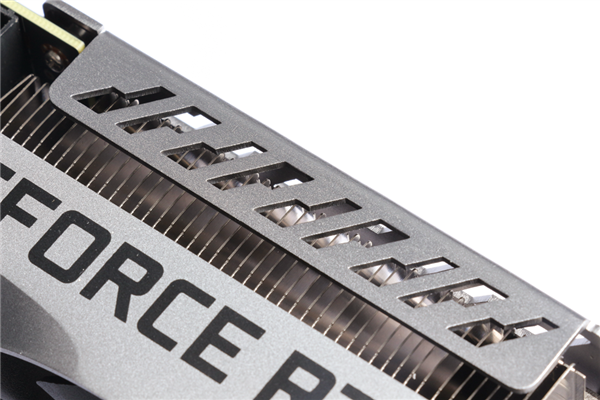 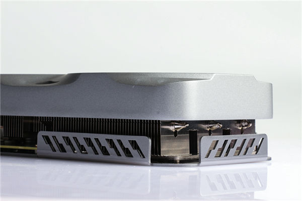
除此之外，背板做了折弯设计，让显卡更加严实的同时，也为本就刚强硬气的金属铠甲增多一丝美观硬朗之感。
归功于功耗的大幅降低， RTX 3060 Ti在整体厚度上成功“瘦身”，只有49mm，比3070 金属大师和3080 金属大师分别瘦了1mm和11mm。更窄的厚度和更轻的重量，一定程度上可以带来更好的兼容性。
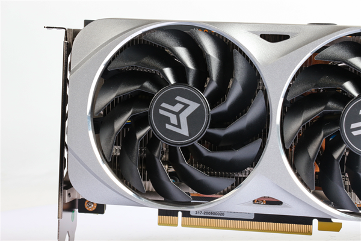
散热器方面，RTX 3060 Ti 金属大师 OC配备了3个90mm大风扇，可以提供强劲风力，快速散热
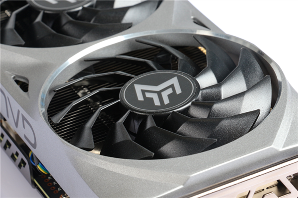
值得一提的是，每个风扇都采用了11片影驰特制的静霜扇叶，经由空气动力学测试，这样的设计可以实现更强的风力和更顺畅的气流，大幅提升散热效果。
除了散热性能强，静霜扇叶还能在转动时形成三层圆圈的形状，为显卡增加层次感和动态美。
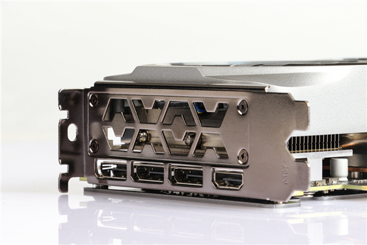
侧面可以看到3个常规的DP 1.4a接口和1个HDMI 2.1接口，其中全新的HDMI 2.1接口支持动态HDR，保证玩家体验高清游戏世界，同时，提高显示器画面刷新率与显卡输出画面的帧数实现同步，进一步消除画面卡顿、撕裂问题，确保流畅稳定游戏体验。
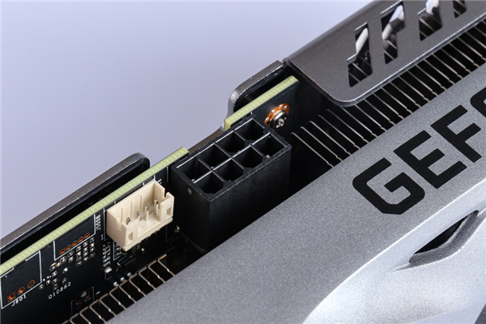
影驰 GeForce RTX 3060 Ti 金属大师 OC有8pin供电接口。